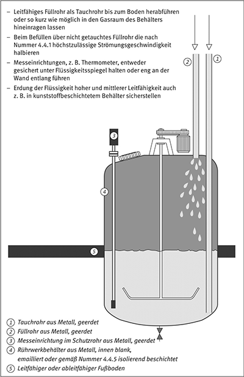
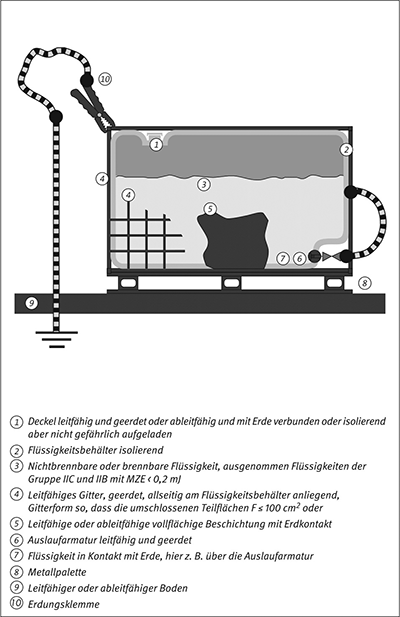
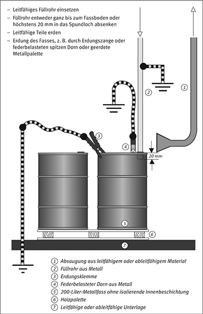
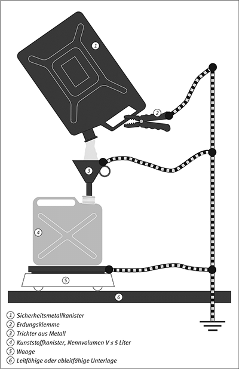
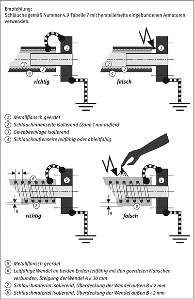

Durch Füllen und Entleeren von Behältern mit Flüssigkeiten, durch Umpumpen, Rühren, Mischen und Versprühen von Flüssigkeiten aber auch beim Messen und Probenehmen sowie durch Reinigungsarbeiten, können sich Flüssigkeiten oder das Innere von Behältern gefährlich aufladen. Die entstehende Ladungsmenge und die Höhe der Aufladung hängen von den Eigenschaften der Flüssigkeit, ihrer Strömungsgeschwindigkeit, dem Arbeitsverfahren sowie von der Größe und Geometrie des Behälters und von den Behältermaterialien ab.
(1) Die entstehende Ladungsmenge einer Flüssigkeit nimmt mit der Größe vorhandener Grenzflächen, z. B. an Wandungen, und mit der Strömungsgeschwindigkeit zu. Eine zweite nicht mischbare Phase, z. B. in Dispersionen oder flüssig/flüssig-Mischungen, vergrößert die Aufladung erheblich. Da sich Flüssigkeiten niedriger Leitfähigkeit beim Strömen stärker aufladen als solche hoher Leitfähigkeit, werden zur Wahl geeigneter Maßnahmen die Flüssigkeiten hinsichtlich ihrer Leitfähigkeit κ wie folgt eingeteilt:
| niedrige Leitfähigkeit: | κ ≤ | 50 pS/m* | |
| mittlere Leitfähigkeit: | 50 pS/m* < | κ ≤ | 10 000 pS/m |
| hohe Leitfähigkeit: | 10 000 pS/m < | κ | |
| Fußnote *: | 50 pS/m für Kohlenwasserstoffe, 100 pS/m für sonstige Flüssigkeiten | ||
Hinweis:
Die Leitfähigkeit ist der Kehrwert des spezifischen Widerstandes, z. B. 10 000 pS/m entsprechen 108 Ω. Die hier genannten Bereiche niedrige, mittlere oder hohe Leitfähigkeit, sind nicht identisch mit den in Nummer 2 in den Absätzen 11, 13 und 14 genannten Bereichen für leitfähig, ableitfähig und isolierend. Messungen der Leitfähigkeit einer Flüssigkeit können unterschiedliche Werte ergeben, je nachdem, ob sie ruht oder nicht.
(2) Eine gefährliche Aufladung tritt besonders leicht bei Flüssigkeiten niedriger Leitfähigkeit auf. Bei Flüssigkeiten mittlerer Leitfähigkeit ist beim Strömen durch Rohre und Filter sowie bei Rührprozessen eine gefährliche Aufladung auch noch möglich. Bei Flüssigkeiten hoher Leitfähigkeit ist mit gefährlichen Aufladungen nur bei stark ladungserzeugenden Prozessen, z. B. beim Versprühen oder wenn sie keinen Erdkontakt aufweisen, zu rechnen.
(1) Die folgenden Maßnahmen gelten für den Umgang mit Flüssigkeiten und organischen Lösemitteln der Explosionsgruppen IIA und IIB mit MZE ≥ 0,2 mJ sowie mit Mineralölprodukten, die explosionsfähige Atmosphäre bilden können. Sie gelten somit z. B. nicht für Schwefelkohlenstoff oder Diethylether.
(2) Alle leitfähigen Medien, Einrichtungen und Gegenstände sind zu erden und alle ableitfähigen mit Erde zu verbinden.
Hinweis:
Hinsichtlich Erdung und Potenzialausgleich siehe auch Nummer 8.
(3) Arbeitsschritte, z. B. Rühren, Umpumpen, Dispergieren, dürfen nur in leitfähigen Behältern durchgeführt werden, es sei denn, die Leitfähigkeit der homogenen Phase beträgt mehr als 10 000 pS/m.
(4) Zur Vermeidung gefährlicher Ladungsansammlungen in Flüssigkeiten ist die Erhöhung der Leitfähigkeit durch Additive eine wirksame Maßnahme.
Hinweis: Mit speziellen Additiven kann die Leitfähigkeit einer Flüssigkeit auf über 50 pS/m erhöht werden, z. B. bei Flugzeugkraftstoffen. Oft genügen bereits Konzentrationen im ppm-Bereich.
(5) Beim Umgang mit brennbaren Flüssigkeiten muss oft die Erzeugung elektrostatischer Ladungen begrenzt werden.
| 1. | Maßnahmen beim Rühren oder Schütteln können z. B. sein | |
| a) | das Begrenzen des Leistungseintrags durch das Rührwerk, | |
| b) | das Vermeiden einer zweiten, nicht mischbaren Phase. | |
| 2. | Maßnahmen beim Befüllen oder Entleeren eines Behälters können z. B. sein | |
| a) | das Begrenzen der Strömungsgeschwindigkeit in der Rohrleitung, | |
| Hinweis: Das Begrenzen der Strömungsgeschwindigkeit bezieht sich im Folgenden auf Flüssigkeiten im normalen Viskositätsbereich. Bei Flüssigkeiten hoher Viskosität, z. B. Schmierölen, sind darüber hinausgehende Maßnahmen erforderlich (siehe auch Nummer 4.6). | ||
| b) | eine ausreichende Verweilzeit hinter Pumpen und Filtern, z. B. durch Berücksichtigen einer Zeitspanne vom Mehrfachen der Relaxationszeit (siehe auch Anhang F), | |
| c) | das Vermeiden verspritzender Flüssigkeit, z. B. durch Unterspiegelabfüllung oder durch Füllrohrführung bis zum Boden bei der Kopfbefüllung oder mit Ablenkplatte bei der Bodenbefüllung, | |
| d) | das Vermeiden von Gasblasen, | |
| e) | das Vermeiden einer zweiten, nicht mischbaren Phase oder deren Aufwirbelung, z. B. von Wasser am Grund von Öltanks. | |
| 3. | Maßnahmen beim Reinigen von Behältern mit Flüssigkeitsstrahlern können z. B. sein | |
| a) | das Beschränken des Flüssigkeitsdruckes und -durchsatzes, | |
| b) | das Vermeiden einer zweiten, nicht mischbaren Phase; insbesondere, wenn die Reinigungsflüssigkeit im Kreislauf geführt wird, | |
| c) | das Vermeiden der Tankreinigung mit Dampfstrahl. | |
| 4. | Maßnahmen beim Umgang mit Suspensionen können z. B. sein | |
| a) | das Verringern der Strömungsgeschwindigkeit. | |
| 5. | Maßnahmen sind auch | |
| a) | das Vermeiden isolierter, leitfähiger Gegenstände im Behälter sowie | |
| b) | die regelmäßige Kontrolle auf schwimmende Gegenstände. | |
(6) Erforderliche Maßnahmen, insbesondere beim Befüllen oder Entleeren, sind abhängig von der Behältergröße. In dieser TRGS werden nachfolgend
Behälter unterschieden.
(1) Große Behälter im Sinne dieser TRGS sind Behälter mit einer Diagonalen L > 5 m oder einem Behälterinhalt V > 50 m3. Dazu gehören z. B. Lagertanks und auch Ladetanks von Schiffen.
(2) Behälter aus ausschließlich ableitfähigem Material sind wie Metallbehälter zu behandeln.
(3) Große Behälter aus ableitfähigem Kunststoff oder mit ableitfähigen Kunststoffbeschichtungen sind mit der Aufschrift „elektrostatisch ableitfähig“ zu versehen.
(4) Für große leitfähige und ableitfähige Behälter mit isolierender Innenbeschichtung gelten die Anforderungen nach Nummer 4.4.5 sinngemäß.
(5) Ortsfeste große Behälter müssen Erdkontakt besitzen und ortsbewegliche müssen mit Erdungseinrichtungen ausgerüstet sein.
Hinweis:
Große Behälter aus nichtmetallischen Werkstoffen erfordern eine gesonderte Beurteilung.
(6) Im Bereich großer ortsfester Behälter unterscheidet man Tanks mit Festdach und Tanks mit Schwimmdach oder innerer Schwimmdecke.
(1) Für die sichere Befüllung großer Behälter kann eine Begrenzung der Strömungsgeschwindigkeit erforderlich sein.
(2) Die Begrenzung der Strömungsgeschwindigkeit hängt unter anderem von folgenden Randbedingungen ab:
Hinweis:
Eine Flüssigkeit ist verunreinigt, wenn sie mehr als 0,5 Vol.-% freie, nicht mischbare Flüssigkeit, z. B. Wasser in Benzin, oder wenn sie mehr als 10 mg/l suspendierte Feststoffe enthält.
Hinweis 1:
Die Anfangsphase des Füllvorganges endet beim Tank mit Festdach, wenn der Auslauf des Füllrohres und alle weiteren Einbauteile am Boden des Tanks um mindestens das Zweifache des Füllrohrdurchmessers überdeckt sind.
Hinweis 2:
Bei Tanks mit Schwimmdach oder inneren Schwimmdecken endet die Anfangsphase beim Aufschwimmen des Daches oder der Abdeckung.
Hinweis 3:
Liegt Wasser in den Rohrleitungen vor, endet die Anfangsphase, nachdem das vorhandene Wasser vollständig beseitigt wurde.
Hinweis 4:
Erfahrungsgemäß liegt kein Wasser in den Rohrleitungen mehr vor, nachdem das Zweifache des Rohrleitungsinhaltes in den Tank gelaufen ist oder die Befüllung bei niedriger Strömungsgeschwindigkeit 30 Minuten angedauert hat.
(3) Die höchstzulässigen Strömungsgeschwindigkeiten für das Befüllen großer Metalltanks mit Flüssigkeiten niedriger Leitfähigkeit zeigt Tabelle 3.
Hinweis:
Bei Strömungsgeschwindigkeiten v ≤ 7 m/s ist erfahrungsgemäß nicht mit gefährlichen Aufladungen zu rechnen.
(4) Da für mittlere Leitfähigkeiten von 50 pS/m bis 10 000 pS/m nur geringe Erfahrungswerte vorliegen, wird empfohlen, die Werte der Tabelle 3 auch für diese Flüssigkeiten anzuwenden.
Tabelle 3: Höchstzulässige Strömungsgeschwindigkeiten v beim Befüllen großer Metalltanks mit Flüssigkeiten niedriger Leitfähigkeit
| Randbedingung beim Befüllen | Tank mit Festdach | Tank mit Schwimmdach oder Schwimmdecke |
| In der Anfangsphase | v ≤ 1 m/s | v ≤ 1 m/s |
| danach ohne Verunreinigungen | v ≤ 7 m/s | keine Begrenzung der Strömungsgeschwindigkeit |
| danach mit Verunreinigungen | v ≤ 1 m/s |
(1) Neben den Maßnahmen nach Nummer 4.2 sind alle leitfähigen Teile der Tanks und alle dazugehörenden leitfähigen Ausrüstungen, wie Rohre, Pumpen, Filtergehäuse, zu erden.
(2) Bei Flüssigkeiten niedriger Leitfähigkeit sind zusätzliche Maßnahmen erforderlich:
Hinweis: Diese beiden Maßnahmen vermeiden den Auftrieb aufgeladener Flüssigkeiten an die Oberfläche und verringern das elektrische Potenzial im Totraum des Tanks.
(3) Hinter Einrichtungen, die Flüssigkeiten aufladen, z. B. hinter Mikrofiltern in der Einfüllleitung, ist eine angemessene Verweilzeit zwischen den ladungserzeugenden Bauteilen und dem Tankeinlass erforderlich.
Hinweis:
Damit wird die Ansammlung von Ladungen im Tank verringert.
(4) Die Befüllung ist so durchzuführen, dass Entladungen zwischen der Flüssigkeit und dem Füllrohr oder den Einbauteilen vermieden werden.
(5) Turbulenz der Flüssigkeiten ist zu vermeiden.
Hinweis 1:
Wichtige Parameter beim Befüllen und für das Vermeiden von Turbulenzen sind der Querschnitt des Füllrohres, die Strömungsgeschwindigkeit sowie die Steuerung des Füllrohres bei Unterspiegelbefüllung.
Hinweis 2:
Vermeiden von Turbulenz bewirkt, dass einfließende, aufgeladene Flüssigkeit eher am Boden des Tanks verbleibt und nicht an die Oberfläche gelangt. Abgesetzte, nicht mischbare Flüssigkeiten, z. B. Bodenwasser, Feststoffe oder Sedimente, werden ohne Turbulenz nicht aufgewirbelt.
(6) Der Durchmesser des Füllrohres und der Volumenstrom sind so zu wählen, dass die Strömungsgeschwindigkeiten weder zu Beginn noch danach die höchstzulässigen Werte nach Nummer 4.3.1 überschreiten.
(1) Das Schwimmdach oder die Schwimmdecke müssen aus leitfähigem Material bestehen und geerdet sein, um elektrische Felder oberhalb des Flüssigkeitsspiegels zu vermeiden.
(2) Schwimmkörper, z. B. Schwimmkugeln, dürfen nur bei Flüssigkeiten mit ausreichender Leitfähigkeit eingesetzt werden und müssen aus leitfähigem oder ableitfähigem Material bestehen sowie mit Erde verbunden sein.
Hinweis:
Schwimmkörper werden eingesetzt, um die Verdunstung im Tank zu beschränken. Sie können sich gefährlich aufladen, wenn sie nicht mit Erde verbunden sind.
(3) Der Durchmesser des Füllrohres und der Volumenstrom sind so zu wählen, dass die Strömungsgeschwindigkeiten die höchstzulässigen Werte nach Nummer 4.3.1 nicht überschreiten.
(4) In der Anfangsphase ist Folgendes zu berücksichtigen:
Hinweis:
Damit wird die Ansammlung von Ladungen im Tank verringert.
(5) Die einfließende Flüssigkeit darf keine gasförmige Phase, z. B. keine Luft- oder Gasblasen, enthalten.
Hinweis:
Unter dieser Bedingung liegt bei Tanks mit Schwimmdach oder innerer Schwimmdecke nach der Anfangsphase keine explosionsfähige Atmosphäre oberhalb des Flüssigkeitsspiegels vor.
(1) Mittelgroße Behälter im Sinne dieser TRGS sind Behälter mit einer Diagonalen L ≤ 5 m oder einem Rauminhalt 1 m3 < V ≤ 50 m3. Dazu gehören z. B. Reaktionsbehälter und die Behälter von Straßentank- oder Eisenbahnkesselwagen.
(2) Unabhängig von der Leitfähigkeit der Flüssigkeit sind die Maßnahmen zur Begrenzung der Ladungserzeugung nach Nummer 4.2 zu treffen.
(1) Die Strömungsgeschwindigkeit ist zu begrenzen. Die höchstzulässige Strömungsgeschwindigkeit hängt von Größe und Form des Behälters, der Füllmethode, z. B. Kopf- oder Bodenbefüllung, dem Durchmesser der Leitung zum Behälter und der Leitfähigkeit der Flüssigkeit ab und darf 7 m/s nicht überschreiten.
Hinweis:
Beim Befüllen von quader- oder kugelförmigen Behältern von etwa 5 m3 Rauminhalt – das entspricht in etwa der Größe und Form eines Teilraums bei Straßentankwagen – kann es auf Grund ihrer Geometrie am ehesten zu gefährlichen Aufladungen kommen.
(2) Bei der Befüllung mit einer zwei- oder mehrphasigen Flüssigkeit ist die Strömungsgeschwindigkeit auf 1 m/s zu begrenzen. Gleiches gilt auch, wenn abgesetztes Bodenwasser im Behälter aufgewirbelt werden kann.
Hinweis:
Die Strömungsgeschwindigkeit soll aber auch 1 m/s nicht wesentlich unterschreiten, da sich andernfalls Wasser an tiefen Punkten in der Rohrleitung absetzen kann.

(3) Für die höchstzulässige Strömungsgeschwindigkeit einphasiger Flüssigkeiten niedriger Leitfähigkeit, z. B. gesättigter Kohlenwasserstoffe ohne freies Wasser, gilt:
| v · d / N | = | 0,38 m2/s für Bodenbefüllung ohne zentralen Leiter |
| v · d / N | = | 0,50 m2/s für Boden- oder Kopfbefüllung mit zentralem Leiter |
| mit v | = | mittlere, lineare Strömungsgeschwindigkeit im Füllrohr in m/s |
| d | = | Füllrohrdurchmesser in m, bei mehreren Füllleitungen zwischen Tankkammern der kleinste Rohrdurchmesser im zu befüllenden Tank bzw. der Tankkammer in m |
Hinweis:
An die Stelle des kleinsten Rohrdurchmessers tritt der nächst größere, wenn die Länge des kleinsten Rohres kürzer als 10 m ist und sein Durchmesser mindestens 2/3 des nächst größeren Durchmessers beträgt.
| N = | Geometriefaktor des Tanks | ||
| N = | 1 | für | L < 2,0 m wobei L Tankkammerlänge in m |
| N = | 0,7·√L | für | 2,0 m ≤ L ≤ 4,5 m |
| N = | 1,5 | für | 4,5 m < L |
Hinweis:
Bei der Kopfbefüllung wirkt das Füllrohr als zentraler Leiter und reduziert das maximale elektrische Potenzial im Tank. Zentraler Leiter ist ein in der Mitte des Behälters befindlicher geerdeter leitfähiger Gegenstand, z. B. ein Füllrohr oder ein Stahlseil.
(4) Bei der Bestimmung der Länge einer Tankkammer sind Schwallbleche nicht zu berücksichtigen.
(5) Liegt z. B. bei der Bodenbefüllung der Kammer eines Straßentankwagens kein zentraler Leiter vor, ist die Strömungsgeschwindigkeit nach der ersten Formel in Absatz 3 zu bestimmen, die um 25 % niedrigere Strömungsgeschwindigkeiten ergibt.
(6) Da für mittlere Leitfähigkeiten von 50 pS/m bis10 000 pS/m nur geringe Erfahrungswerte vorliegen, ist es zweckmäßig, die Werte der Tabelle 4 in Nummer 4.4.2 auch für diese Flüssigkeiten anzuwenden.
Für Straßentankwagen gelten über die Anforderungen an mittelgroße Behälter hinaus folgende Maßnahmen:
| v · d / N = 0,38 m2/s | für Bodenbefüllung ohne zentralen Leiter |
| v · d / N = 0,50 m2/s | für Boden- oder Kopfbefüllung mit zentralem Leiter |
Tabelle 4: Höchstzulässige Strömungsgeschwindigkeiten v für das Befüllen von Straßentankwagen mit Flüssigkeiten niedriger Leitfähigkeit (mit N = 1)
| Straßentankwagen (N = 1) | ||||
| Füllrohr- durchmesser d (m) |
Boden- oder Kopfbefüllung mit zentralem Leiter v · d / N = 0,50 m2/s | Bodenbefüllung ohne zentralen Leiter v · d / N = 0,38 m2/s | ||
| Strömungs- geschwindigkeit v (m/s) |
Volumen- strom (m3/min) |
Strömungs- geschwindigkeit v (m/s) |
Volumen- strom (m3/min) |
|
| 0,05 | 7,0* | 0,83 | 7,0* | 0,83 |
| 0,08 | 6,3 | 1,90 | 4,7 | 1,40 |
| 0,10 | 5,0 | 2,40 | 3,8 | 1,80 |
| 0,15 | 3,3 | 3,50 | 2,5 | 2,70 |
| 0,20 | 2,5 | 4,70 | 1,9 | 3,50 |
| * Der errechnete Wert wird nach Nummer 4.4.1 auf 7,0 m/s begrenzt. | ||||
Tabelle 5: Höchstzulässige Werte für v · d von Kraftstoffen in Abhängigkeit von Schwefelgehalt und Leitfähigkeit (mit N = 1)
| Schwefelgehalt (ppm) | Leitfähigkeit κ (pS/m) | ||
| 10 ≥ κ oder unbekannt | 50 ≥ κ > 10 | κ > 50 | |
| > 50 | v · d ≤ 0,38 | v · d ≤ 0,5 | v · d ≤ 0,5 |
| ≤ 50 | v · d ≤ 0,25 | v · d ≤ 0,38 | v · d ≤ 0,5 |
Für Eisenbahnkesselwagen gelten über die Anforderungen an mittelgroße Behälter hinaus folgende Maßnahmen:
| v · d / N = 0,35 m2/s | für Wechselbeladung schwefelarmer Kraftstoffe niedriger Leitfähigkeit |
| v · d / N = 0,38 m2/s | für Bodenbefüllung ohne zentralen Leiter |
| v · d / N = 0,50 m2/s | für Boden- oder Kopfbefüllung mit zentralem Leiter |
Tabelle 6: Höchstzulässige Strömungsgeschwindigkeiten v für das Befüllen von Eisenbahnkesselwagen mit Flüssigkeiten niedriger Leitfähigkeit (mit N = 1,5)
| Eisenbahnkesselwagen (N = 1,5) | ||||
| Füllrohr- durchmesser d (m) |
Boden- oder Kopfbefüllung mit zentralem Leiter v · d / N = 0,50 m2/s |
Bodenbefüllung ohne zentralen Leiter v · d / N = 0,38 m2/s |
||
| Strömungs- geschwindigkeit v (m/s) |
Volumen- strom (m3/min) |
Strömungs- geschwindigkeit v (m/s) |
Volumen- strom (m3/min) |
|
| 0,10 | 7,0* | 3,3 | 5,6 | 2,6 |
| 0,15 | 5,0 | 5,3 | 3,7 | 4,0 |
| 0,20 | 3,8 | 7,1 | 2,8 | 5,3 |
| 0,25 | 3,0 | 8,8 | 2,2 | 6,6 |
| 0,30 | 2,5 | 10,6 | 1,9 | 7,9 |
| * Der errechnete Wert wird nach Nummer 4.4.1 auf 7,0 m/s begrenzt. | ||||
(1) Mittelgroße Behälter aus ausschließlich ableitfähigem Material werden wie Metallbehälter behandelt.
(2) Mittelgroße Behälter aus ableitfähigem Kunststoff oder mit ableitfähigen Kunststoffbeschichtungen sind mit der Aufschrift „"elektrostatisch ableitfähig“" zu versehen.
(3) Ortsfeste Behälter müssen Erdkontakt besitzen und ortsbewegliche mit Erdungseinrichtungen ausgerüstet sein.
(1) An Innenbeschichtungen können gefährliche Aufladungen auftreten, z. B. durch Reibung, Reinigung oder Kontakt mit aufgeladener Flüssigkeit.
(2) Diese Gefahr besteht für Flüssigkeiten der Explosionsgruppen IIA und IIB nicht bei isolierenden Beschichtungen von weniger als 2 mm Dicke, z. B. Farbschichten oder Epoxidbeschichtungen, Auskleidungen oder entsprechenden Leckschutzsystemen. Hierbei darf der Behälter nur zum Befüllen, Entleeren, Transportieren und Lagern verwendet und nicht wiederholt schnell befüllt werden.
Hinweis:
Stark ladungserzeugende Prozesse, z. B. wiederholtes schnelles Befüllen, können auf der beschichteten Innenseite hohe Ladungsdichten erzeugen, die zu zündwirksamen Gleitstielbüschelentladungen führen. In diesen Fällen muss die Durchschlagspannung der Beschichtung UD ≤ 4 kV sein.
(3) Für Flüssigkeiten der Explosionsgruppe IIC darf die Dicke der Beschichtung 0,2 mm nicht überschreiten.
(4) Für innenbeschichtete Behälter gilt ferner:
(1) Der Behälter einschließlich aller Bauteile ist zu erden bzw. mit Erde zu verbinden. Personen in der direkten Umgebung des Behälters dürfen nicht aufgeladen werden.
Hinweis:
Es besteht leicht die Gefahr, dass die äußere Beschichtung eines Behälters aufgeladen wird und dass außen angebrachte Gegenstände isoliert sind.
(2) Bei Beschichtungsdicken D ≤ 2 mm sind keine gefährlichen Aufladungen zu erwarten, solange nicht durch äußere Prozesse starke elektrostatische Aufladungen erzeugt werden, z. B. durch Sprühaufladung.
Isolierende Behälter dürfen in explosionsgefährdeten Bereichen nicht eingesetzt werden, es sei denn, sie können nachweislich nicht gefährlich aufgeladen werden.
Hinweis:
Sie können z. B. von außen nicht gefährlich aufgeladen werden, wenn sie in der Erde vergraben sind. Durch Vergraben wird ein isolierender Behälter einem leitfähigen Tank mit isolierender Innenbeschichtung vergleichbar und kann für brennbare Flüssigkeiten gemäß Nummer 4.4.5 eingesetzt werden.
(1) Kleine Behälter im Sinne dieser TRGS sind Behälter mit einem Volumen V ≤ 1 m3. Sie sind in der Regel aus Metall oder beschichtetem Metall, aus Kunststoffen oder umwehrten und ummantelten Kunststoffen oder aus Glas hergestellt.
Hinweis:
Beispiele für diese Behälter sind Container, Fässer, Kanister, Flaschen. Glasbehälter siehe auch Nummer 4.13.
(2) Gefährliche Aufladungen können durch Reibung, durch Flüssigkeitsströmung oder durch nicht geerdete Personen entstehen. In diesen Fällen muss mit gefährlichen Entladungen an isolierten Metallkomponenten, z. B. Griffen, Verschlüssen, Fasspumpen, sowie an festen oder flüssigen Oberflächen gerechnet werden.
(1) Während des Befüllens und Entleerens des Behälters müssen alle leitfähigen oder ableitfähigen Teile des Systems elektrisch leitend verbunden und geerdet sein.
Hinweis:
Ein Metalltrichter darf nicht, z. B. durch eine Kunststoffmuffe, vom Behälter isoliert sein.
(2) Isolierende Teile, z. B. Kunststofftrichter, dürfen nicht eingesetzt werden. Ausnahmen siehe auch Nummern 4.5.5 und 4.8.
(3) Beim Befüllen des Behälters mit Flüssigkeiten der Explosionsgruppen IIC und IIB mit MZE < 0,2 mJ oder mit mehrphasigen Flüssigkeiten, deren kontinuierliche Phase eine niedrige Leitfähigkeit aufweist, darf die höchstzulässige Strömungsgeschwindigkeit von 1 m/s nicht überschritten werden.
(1) Zur Vermeidung von Büschelentladungen dürfen Beschichtungsdicken 2 mm nicht überschreiten. Werden beschichtete Behälter für Gefahrstoffe der Explosionsgruppe IIC verwendet, dürfen nur Beschichtungsdicken D ≤ 0,2 mm verwendet werden.
Hinweis:
An Innenbeschichtungen können gefährliche Aufladungen, z. B. durch Reibung, Reinigung oder Kontakt mit aufgeladener Flüssigkeit, auftreten.
(2) Stark ladungserzeugende Prozesse, z. B. wiederholtes schnelles Befüllen, sind zu vermeiden, es sei denn, die Innenbeschichtung besitzt eine Durchschlagspannung UD ≤ 4 kV.
Hinweis:
Andernfalls können auf der beschichteten Innenseite hohe Ladungsdichten auftreten, die zu zündwirksamen Gleitstielbüschelentladungen führen.
(3) Die Beschichtung muss fest mit der Behälterwand verbunden sein; Ablösen oder Abblättern der Beschichtung darf nicht auftreten.
(4) Sowohl bei Flüssigkeiten hoher als auch mittlerer Leitfähigkeit muss während des Befüllens oder Entleerens eine leitfähige Verbindung zwischen Flüssigkeit und Erde vorhanden sein. Dies ist über Unterspiegelbefüllung zu erreichen oder durch ein bis zum Boden geführtes Tauchrohr.
Gegen die durch die Beschichtung zusätzlich auftretenden Gefahren sind die Maßnahmen für mittelgroße Behälter nach Nummer 4.4.6 zu treffen.
(1) Isolierende Behälter mit leitfähiger Umhüllung dürfen für brennbare Flüssigkeiten der Explosionsgruppe IIC und IIB mit MZE < 0,2 mJ nicht verwendet werden.
Hinweis:
Ein Beispiel isolierender Behälter mit leitfähiger Umhüllung ist der gitterummantelte oder außen leitfähig beschichtete, quaderförmige Kunststoffbehälter auf Palette, der so genannte „Rigid Intermediate Bulk Container“ (RIBC).
(2) Für alle anderen als die in (1) genannten brennbaren Flüssigkeiten muss nachgewiesen sein, dass weder die Außen- und Innenflächen des Behälters noch die Flüssigkeit im Behälter gefährlich aufgeladen werden können.
(3) Die Arbeitsschritte Befüllen, Transportieren, Lagern, Bereithalten vor Ort und Entleeren eines derartigen Behälters, z. B. RIBC, gelten als sicher, wenn die nachfolgenden neun Mindestanforderungen erfüllt werden:
| a) | müssen die vom Gitter gebildeten Teilflächen A ≤ 100 cm2 sein, |
| b) | muss das Gitter an allen sechs Behälterseiten eng anliegen und die Kunststoffblase berühren und es darf nur an wenigen konstruktionsbedingten Stellen ein Abstand von höchstens 2 cm zwischen Kunststoffbehälter und Umhüllung auftreten, Hinweis: Konstruktionsbedingte Stellen sind z. B. Stutzen und Armaturenanschlüsse. |
| c) | kann ein größerer Abstand nur an Ecken und Kanten toleriert werden. Hinweis: Ecken und Kanten der Behälterblase sind meist abgerundet, um Stoß- und Fallprüfung zu bestehen. |
(4) Für andere als die vorstehend genannten Arbeitsschritte reichen die Mindestanforderungen des Absatzes 3 Nr. 1 bis 9 nicht aus; für sie ist die Verwendung isolierender Behälter mit leitfähiger Umhüllung ohne zusätzliche Maßnahmen ausgeschlossen.
Hinweis:
Zu den ausgeschlossenen Arbeitsschritten gehören z. B. Rühren, Mischen, Reinigen sowie die Verwendung des Behälters als Reaktionsgefäß, Absetz- oder Sammelbehälter.
(5) Behälter, die in explosionsgefährdeten Bereichen eingesetzt werden, müssen wiederkehrend geprüft werden. Im Rahmen dieser Wiederholungsprüfung muss überprüft werden, ob die oben genannten elektrostatischen Anforderungen des gebrauchten RIBC erfüllt sind. Hierzu muss insbesondere geprüft werden, ob alle Metallteile und die Kontaktstelle mit der Flüssigkeit und die Kontaktstellen mit dem Fußboden untereinander elektrisch leitend verbunden sind (Sicht- oder messtechnische Prüfung). Handelt es sich um RIBC, deren Kunststoffblase ableitfähig ausgeführt ist, muss ein messtechnischer Nachweis erfolgen, dass die Ableitfähigkeit auch am gebrauchten RIBC sichergestellt ist.
Hinweis:
RIBC, die für den Gefahrguttransport zugelassen sind, müssen alle 30 Monate einer Wiederholungsprüfung (WHP) unterzogen werden.
(6) Rekonditionierte Behälter, die in explosionsgefährdeten Bereichen eingesetzt werden, müssen vor der Wiederbenutzung geprüft werden. Der Umfang entspricht der Prüfung gemäß (5).


(1) Bei isolierenden Behältern ist die Wahrscheinlichkeit gefährlicher Aufladungen höher einzuschätzen als bei anderen Behältern, da leitfähige oder ableitfähige Behälterwände nicht zur Verfügung stehen.
Hinweis:
Insbesondere können Gefährdungen ausgehen von
(2) In Zone 2 sind für den Umgang mit isolierenden Behältern folgende Maßnahmen zu treffen:
(3) In Zone 1 beträgt die höchstzulässige Strömungsgeschwindigkeit 1 m/s. Das höchstzulässige Volumen beträgt 5 l.
Hinweis:
Bei bestimmungsgemäßer Verwendung sind gefährliche Aufladungen durch Ein- und Ausströmen von Flüssigkeiten nicht zu erwarten, z. B. bei Kanistern für Otto-Kraftstoffe.
(4) In Zone 0 dürfen unabhängig von den Eigenschaften der Flüssigkeit isolierende Behälter nicht eingesetzt werden. Hiervon sind Behälter zur Probenahme nach Nummer 4.8 ausgenommen.

(1) Hochviskose Flüssigkeiten, z. B. Schmieröle, laden sich häufig schneller auf als niedrigviskose, z. B. Treibstoffe oder Lösemittel. Die schnelle Aufladung wird oft beim Strömen durch Rohrleitungen und Filter festgestellt.
(2) Da sichere Strömungsgrenzen für hochviskose Flüssigkeiten nicht bekannt sind, werden andere Maßnahmen des Explosionsschutzes, z. B. Inertisierung, zweckmäßig.
(3) Vor Produktwechsel von einer brennbaren Flüssigkeit geringer Dichte zu einer hochviskosen Flüssigkeit höherer Dichte ist der Behälter zu reinigen.
(1) Beim Durchströmen von Drahtnetzen oder Siebeinsätzen werden Flüssigkeiten nur geringfügig mehr aufgeladen als beim Durchströmen von Rohren. Mikrofilter und Wasserabscheider mit einer Poren-Nennweite von weniger als 10 μm erzeugen dagegen sehr hohe Ladungsdichten.
Hinweis:
Typische Werte sind 10 μC/m3 im Rohrstrom, etwa 100 μC/m3 hinter verschmutzten Drahtnetzen und Siebeinsätzen sowie 5 000 μC/m3 oder mehr hinter einem Mikrofilter.
(2) Drahtnetze und Siebeinsätze sind bei Verschmutzung zu reinigen oder auszutauschen.
Hinweis:
Hierdurch wird vermieden, dass die Strömungsgeschwindigkeit im Siebeinsatz und die damit verbundene Aufladung weiter erhöht werden. Die Verschmutzung des Siebeinsatzes lässt sich über den Druckabfall erkennen.
(3) Beim Ausbau und bei der Reinigung isolierender Filter ist damit zu rechnen, dass diese gefährlich aufgeladen sein können.
(4) Hinter Mikrofiltern oder Wasserabscheidern ist eine ausreichende Verweilzeit einzuhalten. Zu diesem Zweck können leitfähige Rohrleitungen hinter dem Filter oder ein zusätzlicher leitfähiger Relaxationsbehälter eingesetzt werden.
Hinweis:
Die erforderliche Verweilzeit t in s kann mit der Zahlenwertgleichung
t = 100/κ
mit κ = Leitfähigkeit in pS/m
errechnet werden. Damit wird die aufgeladene Flüssigkeit auf ein sicheres Niveau entladen, bevor sie in einen Behälter eintritt.
(5) Neben der Erdung und der elektrisch leitenden Verbindung aller Teile sind folgende Bedingungen zu beachten:
Hinweis:
Relaxationszeit siehe auch Anhang F.
(1) Alle beim Messen und Probenehmen verwendeten leitfähigen oder ableitfähigen Teile oder Geräte, müssen geerdet bzw. mit Erde verbunden sein.
Hinweis:
Zu den Geräten zählen z. B. Seile, Tauchstangen oder Becher.
(2) Die Verbindungen müssen durchgehend aus leitfähigem Material bestehen und dürfen nicht unterbrochen sein. Metallketten sind nicht einzusetzen.
(3) Bei Flüssigkeiten niedriger und mittlerer Leitfähigkeit sind Probenahmegefäße aus isolierendem Material mit einem Volumen V ≤ 1 Liter bevorzugt gegenüber leitfähigen Gefäßen gleichen Volumens einzusetzen. Die Probenahmegefäße dürfen vorher nicht gefährlich aufgeladen sein.
(4) In Behältern mit explosionsfähiger Atmosphäre dürfen keine Messungen und Probenahmen durch Einbringen von Sonden in den Gasraum erfolgen, solange ladungserzeugende Prozesse stattfinden.
Hinweis:
Zu solchen Prozessen zählen unter anderem das Pumpen von Flüssigkeiten mit geringer Leitfähigkeit in einen anderen Tank sowie viele Reinigungsprozesse.
(5) Nach dem Ende eines ladungserzeugenden Prozesses darf mit Messen und Probenehmen erst begonnen werden, wenn die Abwesenheit gefährlicher Aufladungen sichergestellt ist. Dies kann durch eine ausreichend lange Wartezeit erreicht werden.
(6) Die Wartezeit nach einem Arbeitsprozess mit mehrphasigen Flüssigkeiten soll bei niedriger Leitfähigkeit der kontinuierlichen Phase mindestens 30 Minuten betragen.
Hinweis:
Dies tritt z. B. auf, wenn Flüssigkeiten niedriger Leitfähigkeit mit geringen Mengen aufgerührten Wassers oder ungelösten Feststoffpartikeln in einen Behälter gepumpt wurden oder nach dem Rühren einer Suspension in einem Dissolver.
(7) Nach einem Mischvorgang mit Flüssigkeiten geringer Leitfähigkeit ist abzuwarten, bis sich alle Bestandteile der Mischung abgesetzt haben.
(8) Nach einem Reinigungsvorgang muss so lange gewartet werden, bis sich ein gegebenenfalls erzeugter aufgeladener Sprühnebel abgesetzt hat.
Hinweis:
Das Absetzen kann mehrere Stunden in Anspruch nehmen.
(9) Wartezeiten können verkürzt werden, wenn durch ortsfeste Messgeräte, z. B. Feldstärkenmessgeräte, die Abwesenheit gefährlicher Aufladungen nachgewiesen ist.
Hinweis:
Bei Gewittern, Schneestürmen, Hagel oder anderen atmosphärisch bedingten Störungen soll Messen und Probenehmen unter freiem Himmel nicht stattfinden.
(1) Rohrleitungen und Schläuche müssen aus leitfähigem Material gefertigt sein oder den unter den folgenden Nummern genannten Anforderungen entsprechen.
(2) Innerhalb eines Rohres oder Schlauches kann gefährliche explosionsfähige Atmosphäre vorliegen, insbesondere beim Leerlaufen. Außerhalb des Rohres ist zusätzlich auf gefährliche explosionsfähige Atmosphäre durch andere Gefahrstoffe, die zu Brand- und Explosionsgefahren führen können, zu achten.
Hinweis:
Strömt eine Flüssigkeit durch ein Rohr, treten elektrische Ladungen entgegengesetzter Polarität an der inneren Rohrwand und der Flüssigkeit auf. Insbesondere der Oberflächenwiderstand des Rohres bzw. Schlauches, die Leitfähigkeit der Flüssigkeit und die Strömungsgeschwindigkeit beeinflussen die entstehende Ladungsmenge. Darüber hinaus ist es möglich, dass Metallteile, die durch isolierende Rohre oder Schläuche isoliert sind, aufgeladen werden.
(3) Von der Eignung eines Schlauches für den Transport brennbarer Flüssigkeiten darf nicht auf seine Eignung für den sicheren Transport von Stäuben geschlossen werden.
Hinweis:
Sollen Rohre oder Schläuche in explosionsgefährdeten Bereichen zur Aspiration oder zum pneumatischen Transport von Schüttgut eingesetzt werden, müssen sie den Anforderungen in Nummer 6.4 entsprechen.
(4) Die Außenfläche des Rohres kann sich zusätzlich aufladen, z. B. durch Reibung.
(5) Die Leitungen dürfen mit Luft oder anderen Gasen nur dann gereinigt werden, wenn unterhalb der höchstzulässigen Strömungsgeschwindigkeiten für Flüssigkeiten nach Nummer 4.3 bzw. 4.4 gearbeitet wird.
Rohrleitungen aus leitfähigem oder ableitfähigem Material sind untereinander leitfähig zu verbinden und zu erden.
Hinweis:
Ableitfähige Rohre können bei der Verwendung für Flüssigkeiten mit niedriger Leitfähigkeit sehr hoch aufgeladen werden.
(1) In der Regel sind Auskleidungen mit einem spezifischen Widerstand ρ < 108 Ωm zu verwenden.
(2) Auskleidungen mit einem spezifischen Widerstand zwischen 108 Ωm und 1011 Ωm können sicher unter folgenden, experimentell abgesicherten Bedingungen eingesetzt werden:
(3) Bei Auskleidungen mit einem spezifischen Widerstand ρ > 1011 Ωm muss die Dicke der Auskleidung zur Vermeidung von Büschelentladungen D ≤ 2 mm sein.
Hinweis:
Wird ein leitfähiges Rohr mit einer isolierenden Auskleidung verwendet, um eine Flüssigkeit geringer oder mittlerer Leitfähigkeit zu transportieren, treten elektrische Ladungen an der Innenfläche der Auskleidung auf. Gefährliche Entladungen treten bei dicken Auskleidungen, z. B. Kunststoffbuchsen, eher auf als bei dünnen, z. B. Epoxidbeschichtungen.
(4) Sollen dennoch Auskleidungen mit einem spezifischen Widerstand ρ > 1011 Ωm und einer Dicke der Auskleidung D > 2 mm verwendet werden, müssen neben der Erdung aller leitfähigen Teile der Rohrleitung zusätzliche Maßnahmen getroffen werden. Z. B. müssen die Rohre während des Betriebes vollständig mit Flüssigkeit gefüllt bleiben. Beim Befüllen oder Entleeren eines Rohres darf die Strömungsgeschwindigkeit nicht mehr als 1 m/s betragen. Wird die Flüssigkeit durch Mikrofilter geführt, können niedrigere Geschwindigkeiten erforderlich sein, die durch Bestimmen der Aufladung im Einzelfall festzulegen sind.
Hinweis:
Entladungen können isolierende Auskleidungen durchschlagen und beschädigen, z. B. Korrosionsschäden verursachen. Ein spezifischer Widerstand ρ < 108 Ωm oder eine Durchschlagspannung UD > 100 kV vermeiden diese Schäden.
(5) Bei Flüssigkeiten mittlerer oder hoher Leitfähigkeit ist zur Vermeidung von Ladungsansammlungen Erdkontakt der Flüssigkeit erforderlich.
(1) Das Strömen von Flüssigkeiten geringer Leitfähigkeit in isolierenden Rohren kann sehr hohe Ladungsdichten an den Oberflächen der Rohre erzeugen. Es sind daher zusätzliche Maßnahmen des Explosionsschutzes erforderlich, z. B. Vermeiden explosionsfähiger Atmosphäre.
(2) Verbleiben nach dem Verschweißen von Kunststoffrohren metallische Heizdrähte im Rohrinnern mit Kontakten nach außen, sind die verbleibenden Anschlüsse der Heizdrähte zu isolieren, z. B. mit gut sitzenden Plastikstopfen.
Hinweis: Spezielle Erdungsmaßnahmen sind an den Schweißstellen von Kunststoffrohren nicht notwendig, obwohl an diesen Stellen verfahrensbedingt isolierte elektrische Leiter vorhanden sein können.
(3) Außerdem soll die Durchschlagspannung UD > 100 kV betragen, damit Perforationen des Rohres und dadurch Leckagen vermieden werden.
4.9.3.1 Oberirdisch verlegte isolierende Rohre
(1) In explosionsgefährdeten Bereichen dürfen keine isolierenden Rohre eingesetzt werden; siehe auch Nummer 3.2.1.
(2) Sollen dennoch Flüssigkeiten mit isolierenden Rohren transportiert werden, ist sicherzustellen, dass keine gefährlichen Aufladungen außerhalb des Rohres auftreten.
Hinweis:
Starke elektrische Felder außerhalb des Rohres können zu zündwirksamen Büschel- und an nicht geerdeten Metallteilen zu Funkenentladungen führen.
(3) Besitzt die Flüssigkeit eine Leitfähigkeit κ > 10 000 pS/m, können isolierende Rohre eingesetzt werden, wenn die Flüssigkeit an mindestens einer Stelle Erdkontakt über ein geerdetes leitfähiges Bauteil, z. B. ein Ventil oder einen Tank, besitzt. Diese Stelle soll sich nicht weiter als 10 m vor dem Rohrende befinden.
(4) Besitzt die Flüssigkeit eine Leitfähigkeit zwischen 50 und 10 000 pS/m, dürfen isolierende Rohre nur dann eingesetzt werden, wenn über eine Einzelfallbetrachtung nachgewiesen ist, dass eine gefährliche Aufladung nicht zu erwarten ist.
(5) Beim Einsatz isolierender Rohre muss zusätzlich sichergestellt werden, dass keine gefährliche Aufladung von außen, z. B. durch Dampfstrahlen oder Reiben, erfolgt. Alle leitfähigen Bauteile, z. B. Flansche oder Ventile, sind nach Nummer 8 zu erden. Entsprechendes gilt auch für leitfähige Einrichtungen, die sich in der Nähe oberirdisch verlegter isolierender Rohre befinden.
Hinweis:
In der Nähe aufgeladener Rohre sind an durch Influenz aufgeladenen isolierten Metallteilen Funkenentladungen möglich.
4.9.3.2 Unterirdisch verlegte isolierende Rohre
(1) Eingegrabene isolierende Rohre stellen in der Regel dann keine Zündgefahr dar, wenn ihre gesamte Oberfläche Kontakt mit Erde besitzt, die Flüssigkeit eine Leitfähigkeit κ > 50 pS/m besitzt und an mindestens einer Stelle mit einem geerdeten leitfähigen Bauteil, z. B. Ventil, in Berührung steht.
(2) Beim Ausgraben eines Teils der Rohrleitung sind leitfähige oder ableitfähige Bauteile vor ihrem völligen Freilegen zu erden.
Hinweis 1:
Das Erden eines bereits aufgeladenen Bauteils in einer potenziell explosionsfähigen Atmosphäre ist zu vermeiden.
Hinweis 2:
Besteht die Gefahr einer explosionsfähigen Atmosphäre, sind zusätzlich alle leitfähigen Objekte in der näheren Umgebung, z. B. innerhalb der Baugrube, zu erden, da diese durch Influenz aufgeladen werden können.
(1) In der Praxis werden im Allgemeinen mit Armaturen konfektionierte Schläuche eingesetzt. Diese werden als Schlauchleitungen bezeichnet. Für die Beurteilung der Eignung sind jedoch die Eigenschaften des Schlauches maßgebend.
(2) Im Sinne dieser Technischen Regel gilt für die Förderung von Flüssigkeiten als
Hinweis 1:
Der Widerstand wird zwischen den Armaturen der Schlauchleitung gemessen und auf die Schlauchlänge bezogen.
Hinweis 2:
Nach internationalem Regelwerk werden die gleichen Grenzwerte als Widerstand zwischen den Endarmaturen verwendet, d. h. nicht auf einen Meter Schlauchlänge bezogen.
(3) In explosionsgefährdeten Bereichen sollen leitfähige oder ableitfähige Schlauchleitungen eingesetzt werden, da isolierende Schlauchleitungen für den Einsatz in explosionsfähiger Atmosphäre nicht geeignet sind.
Hinweis 1:
Isolierende Schlauchleitungen bestehen aus isolierendem Schlauchmaterial und besitzen weder leitfähige Drähte noch Litzen. Sie leiten elektrische Ladungen nur ungenügend ab.
Leitfähige und ableitfähige Schlauchleitungen werden nach Bauformen unterschieden. Zu ihrer Eignung für den Einsatz in explosionsfähiger Atmosphäre siehe nachstehende Tabelle 7.
Tabelle 7: Eignung von Schlauchleitungstypen für den Einsatz zur Förderung von Flüssigkeiten in explosionsgefährdeten Bereichen
| Typ | M | Ω | ΩCL oder ΩT | ΩM oder MT |
| Eignung | (+) | (+)* | + | + |
| Eignung bei Streuströmen | - | (+) | + | - |
|
+ geeignet (+) nur geeignet, wenn weitere Anforderungen an die Beschaffenheit erfüllt sind (+)* nicht geeignet, wenn isolierende Zwischenschichten im Schlauch vorhanden sind, die nicht leitfähig überbrückt sind - nicht geeignet |
||||
Hinweis 2:
Ein M-Schlauch besitzt elektrisch leitfähige Drahteinlagen, z. B. Metallwendeln, die so eingebracht sind, dass sie sich regelmäßig überkreuzen. Die Einlage ermöglicht eine Ableitung durch Anschluss an den Flansch oder an die Schlauchkupplung. Bei der Prüfung darf der Widerstand von M-Schlauchleitungen zwischen den Armaturen über die ganze Länge nicht mehr als 100 Ω betragen. Bei stark ladungserzeugenden Prozessen können gefährliche Aufladungen nicht ausgeschlossen werden.
Ein Ω-Schlauch besteht aus leitfähigem oder ableitfähigem Material. Er kann zusätzlich mit Metalleinlagen ausgerüstet sein. Bei der Prüfung darf der Widerstand von Ω-Schlauchleitungen zwischen den Armaturen über die ganze Länge nicht mehr als 106 Ω betragen.
Ein ΩCL- oder ΩT-Schlauch besteht zumindest auf der Innenseite und der Außenseite aus ableitfähigem Schlauchmaterial, evtl. vorhandene isolierende Zwischenschichten sind ableitfähig überbrückt. Sofern der Schlauch metallene Stützwendeln aufweist, sind diese bei der Schlauchleitung zumindest auf einer Seite nicht an die Armatur angeschlossen.
Eine ΩM- oder MT-Schlauchleitung ist aufgebaut wie eine ΩCL-Schlauchleitung, jedoch besitzt sie eine metallische Verbindung zwischen beiden Armaturen.
Hinweis 3:
Sollen Schlauchleitungen in explosionsgefährdeten Bereichen zur Aspiration oder zum pneumatischen Transport von Schüttgut eingesetzt werden, sind für die Eignung nicht die Angaben dieser Tabelle heranzuziehen. Es müssen die Anforderungen gemäß Nummer 6.4 erfüllt sein.
(4) Für Zapfschläuche an Tankstellen gilt ein höchstzulässiger Widerstand von 106 Ω zwischen den Schlauchenden. Hier sind bevorzugt Ω-Schlauchleitungen einzusetzen.
(5) Leitfähige Schlauchleitungen erfordern regelmäßige elektrische Durchgangsprüfungen. Es muss außerdem darauf geachtet werden, dass alle inneren Metalleinlagen mit den Armaturen verbunden sind.
Hinweis:
Auf Grund von gerissenen Verbindungsdrähten oder mangelhafter Konstruktion ist es möglich, dass leitfähige Komponenten des Schlauches, z. B. Schlauchkupplungen, Stützwendel oder Abschirmungen, elektrisch isoliert werden.
(6) Können Streuströme nicht ausgeschlossen werden, sollen leitfähige Schlauchleitungen nicht eingesetzt werden. Geeignet sind dagegen Ω-Schlauchleitungen ohne metallische Verbindungen zwischen den Armaturen, siehe Tabelle 7, die zumindest auf der Innenseite und der Außenseite aus ableitfähigem Schlauchmaterial bestehen und bei denen evtl. vorhandene isolierende Zwischenschichten ableitfähig überbrückt sein müssen. Sofern die Schlauchleitungen metallische Stützwendeln aufweisen, dürfen diese nicht auf beiden Seiten an die Armatur angeschlossen sein.
Hinweis 1:
Streuströme schließen Ausgleichsströme ein.
Hinweis 2:
Metallische Einlagen oder Drähte können wegen ihres geringen Widerstandes Streuströme führen, die beim Abkuppeln der Schlauchleitung eine Zündgefahr darstellen.
(7) Werden entgegen Absatz 6 lange leitfähige Schläuche oder leitfähige Schlauchleitungen eingesetzt, sind abschnittsweise Isolierflansche (Isolationswiderstand zwischen 103 Ω und 108 Ω) einzufügen, um Schutz gegen induktive Funken zu gewährleisten. In diesem Fall ist jeder Schlauchabschnitt separat zu erden.

Beispiel 6: Schläuche zum Transport von Flüssigkeiten mit niedriger Leitfähigkeit durch Zone 1, die verursacht ist durch Gefahrstoffe der Explosionsgruppen IIA und IIB
Das Befüllen von Flugzeugtanks, Straßentankwagen oder das Betanken von Kraftfahrzeugen erfordert weitergehende Maßnahmen als die in den jeweiligen Abschnitten zu den entsprechenden Behältern angegebenen. Die nachfolgend beschriebenen Maßnahmen zur Vermeidung hoher Aufladungen gelten in der Regel sowohl für konventionelle als auch für Biokraftstoffe.
Hinweis:
Bei einigen Biokraftstoffen ist der explosionsfähige Bereich größer als bei konventionellen Kraftstoffen und der Flammpunkt kann im Bereich der Umgebungstemperatur liegen.
(1) Bei jedem Betankungsfahrzeug, innerhalb jedes Hydrantentanksystems und innerhalb jeder Zapfsäule müssen sämtliche Metallteile einen guten elektrischen Kontakt untereinander aufweisen.
(2) Bevor die Füllschläuche angeschlossen werden, ist zuerst eine elektrisch leitende Verbindung zwischen dem Flugzeug und dem Betankungsfahrzeug bzw. der Zapfsäule herzustellen. Sie muss fortbestehen, bis der Tankvorgang abgeschlossen ist und die Schläuche gelöst sind.
(3) Steht ein Erdungspunkt zur Verfügung, ist das Betankungsfahrzeug oder die Zapfsäule zunächst mit dem Erdungspunkt und dann mit dem Flugzeug zu verbinden.
(4) Erdungs- oder Potenzialausgleichsverbindungen müssen in ausreichendem Abstand zu den Betankungsschläuchen liegen, um der Gefahr einer Entzündung durch Funken beim Herstellen oder Lösen der Verbindungen zu begegnen.
(5) Die Betankung aus Fässern oder anderen Behältern erfordert die gleichen Erdungsmaßnahmen wie die Betankung mit Fahrzeugen. Die Fasspumpe ist sowohl mit dem Flugzeug als auch mit dem Fass elektrisch leitend zu verbinden.
(6) Da Flugzeugtanks üblicherweise eine flache Form aufweisen, ist abweichend von Nummer 4.4.1 bei Flugzeugkraftstoffen mit einer Leitfähigkeit κ > 50 pS/m und beim Befüllen über einen Schlauch von 63 mm Durchmesser eine durchschnittliche Strömungsgeschwindigkeit von bis zu 7 m/s zulässig. Für Kraftstoffe ohne Leitfähigkeitsadditive dürfen 5 m/s nicht überschritten werden. Eine ausreichende Verweilzeit hinter den Filtern nach Nummer 4.7 muss sichergestellt werden.
Folgende Maßnahmen sind zu berücksichtigen:
(1) Beim Betanken von Kraftfahrzeugen treten Benzindämpfe in der Nähe der Tanköffnung auf, die eine gefährliche explosionsfähige Atmosphäre bilden können.
(2) Folgende Maßnahmen sind durchzuführen bzw. erforderlich:
Hinweis:
Diese Maßnahme stellt sicher, dass das Fahrzeug, das Zapfventil, die das Zapfventil berührende Person, der leitfähige oder ableitfähige Schlauch sowie die angeschlossenen Tank-einrichtungen während der Betankung auf gleichem Potenzial liegen und mit Erde verbunden sind. Die Erfahrung zeigt, dass der Erdkontakt ausreicht, die relativ geringen Mengen elektrischer Ladung über das Zapfventil und gegebenenfalls die Reifen während der Betankung abzuleiten. Ungeeignet versiegelte Böden und Reifen minderer Qualität können die Ableitung herabsetzen. Die Verwendung von Kunststofftanks in Fahrzeugen bewirkt keine zusätzlichen Gefahren. Die Auflage für das Zapfventil am Tankeinfüllstutzen und alle Metallteile müssen elektrisch leitend mit dem Fahrzeug verbunden sein.
(1) Die Befüllung von Lagertanks an Tankstellen erfolgt über unterirdisch verlegte Rohrleitungen. Beim Strömen von Kraftstoff kann es zu gefährlichen Aufladungen kommen.
(2) Für Befüllleitungen ausschließlich aus Metall sind folgende Maßnahmen erforderlich:
Hinweis:
Insbesondere bei Wartungsarbeiten ist darauf zu achten, dass keine isolierten leitfähigen Abschnitte entstehen.
(3) Für Befüllleitungen aus leitfähigem oder ableitfähigem Material oder für isolierende Kunststoffrohre mit einer leitfähigen oder ableitfähigen Innenauskleidung gelten die gleichen Anforderungen wie für Systeme mit Metallrohren nach Absatz 2. Es ist insbesondere darauf zu achten, dass die durchgehende Leitfähigkeit nicht z. B. durch isolierende Schweißnähte unterbrochen wird.
Hinweis:
Solche isolierenden Rohre mit leitfähiger Innenauskleidung werden im Handel als "„leitfähige Rohre"“ angeboten, isolierende Rohre ohne leitfähige Innenauskleidung werden im Handel als "„nichtleitfähige Rohre"“ angeboten.
Freiliegende Leitungsabschnitte dürfen von außen nicht aufgeladen werden, z. B. durch manuelle Reibung.
(4) Wenn die Verwendung von isolierenden Kunststoffleitungen ohne leitfähige oder ableitfähige Innenauskleidung nicht vermieden werden kann, sind alle folgenden Maßnahmen zu ergreifen:
(5) Gaspendelleitungen aus isolierenden Materialien müssen den Anforderungen nach Nummer 3.2.1 entsprechen.
(1) Rühren und Mischen darf nur erfolgen
Hinweis 1:
Rühren und Mischen verschiedener Flüssigkeiten oder von Flüssigkeiten mit Feststoffen sind oft stark ladungserzeugende Prozesse, die leicht zu gefährlichen Aufladungen führen können.
Hinweis 2:
Ladungen werden beim Rühren und Mischen erzeugt, wenn mindestens eine Flüssigkeit eine niedrige Leitfähigkeit aufweist. Die Ladungen werden in diesem Fall insbesondere auf den in der kontinuierlichen Phase suspendierten Flüssigkeiten oder Feststoffen sowie auf isolierten Metallgegenständen angesammelt.
(3) Werden Medien so gemischt, dass Emulsionen oder Suspensionen entstehen, sind in der Regel höhere Leitfähigkeiten für einen sicheren Betrieb notwendig, z. B. 10 000 pS/m. Gegebenenfalls ist der Leistungseintrag des Rührwerks so zu verringern, dass keine gefährliche Aufladung erzeugt wird.
Hinweis:
Die Leitfähigkeit der Hauptphase kann durch Absorption von Ionen durch die Nebenphase beträchtlich sinken. Durch Zugeben von Leitfähigkeitsadditiven kann die Leitfähigkeit erhöht werden. In vielen Fällen werden auch Inertisierungsmaßnahmen ergriffen.
(4) Es gibt Flüssigkeiten, die trotz hoher oder mittlerer Leitfähigkeit sehr leicht aufgeladen werden können. Hierzu gehören z. B. Ethylacetat, Isopropylacetat, Ether und höhere Ketone, jedoch z. B. nicht Aceton. Sofern als kontinuierliche Phase solche sehr leicht aufladbare Flüssigkeiten eingesetzt werden und sie nicht großflächig Kontakt mit leitfähigen Oberflächen besitzen, ist mit so starken Aufladungen zu rechnen, dass weitere Explosionsschutzmaßnahmen, z. B. Inertisieren, erforderlich sind.
(5) Wird mit Schnellmischern, z. B. Dissolvern, gearbeitet, ist mit so starken Aufladungen zu rechnen, dass weitere Explosionsschutzmaßnahmen in Betracht gezogen werden müssen.
(1) Beim Strahlmischen von Flüssigkeiten, deren Leitfähigkeit, gegebenenfalls unter Zusatz von Leitfähigkeitsadditiven, κ > 50 pS/m ist, ist nicht mit gefährlichen Aufladungen zu rechnen, solange der Strahl die Flüssigkeitsoberfläche nicht durchbricht.
Hinweis:
Der freie Strahl kann beim Zerfall oder beim Auftreffen auf die Behälterwand so viele aufgeladene Tropfen in den Gasraum bringen, dass dort eine gefährliche Aufladung entsteht. Leitfähige Flüssigkeiten erzeugen dabei oft höhere Aufladungen als isolierende.
(2) Weist eine Flüssigkeit eine Leitfähigkeit κ < 50 pS/m auf und sind andere Explosionsschutzmaßnahmen nicht möglich, ist die Aufladung des Mischgutes zu beurteilen und auf dieser Basis zu bewerten, ob ein sicherer Betrieb möglich ist.
Hinweis:
Zur Beurteilung können die Feldstärke gemessen und das Potenzial der Flüssigkeitsoberfläche abgeschätzt werden. Einflussgrößen auf die Aufladung und die Feld- und Potenzialverteilung sind z. B.
Beim In-Line-Mischen können hohe Aufladungen auftreten. Ausreichende Relaxationszeiten sind einzuhalten. Beim In-Line-Prozess besteht in der Regel keine explosionsfähige Atmosphäre. Die Strömungsgeschwindigkeit ist so zu wählen, dass sich kein Dampfraum bildet.
Hinweis:
Bei diesem Verfahren erfolgt das Mischen in einem Rohr, durch das die verschiedenen Mischungskomponenten mit verfahrenstechnisch vorgeschriebenen Geschwindigkeiten gepumpt werden.
(1) Beim Reinigen von Behältern, insbesondere beim Strahlen, können hohe elektrostatische Aufladungen entstehen.
(2) Die entstehende Ladungsmenge wird unter anderem beeinflusst von
(3) Zündempfindliche Gemische, z. B. Schwefelkohlenstoff/Luft-Gemische, erfordern zusätzliche Maßnahmen.
(4) Aufprallende Reinigungsstrahlen bilden beim Zerteilen Tropfen oder Nebel, die normalerweise aufgeladen sind und elektrische Ladungen im Behälter erzeugen. Vorhandene Turbulenzen verteilen den aufgeladenen Nebel im gesamten Behälter und können so eine hohe Raumladungsdichte mit hohen Feldstärken erzeugen.
Hinweis 1:
Das durch den Nebel erzeugte elektrische Potenzial besitzt seinen Maximalwert in der Mitte des Behälters und ist abhängig von der Art der Reinigungsflüssigkeit, z. B. Wasser, Öl oder dem Einsatz von Hilfsstoffen und den Parametern des verwendeten Flüssigkeitsstrahlers, z. B. Flüssigkeitsdruck, Durchsatz und Düsendurchmesser.
Hinweis 2:
Darüber hinaus können isolierte Leiter gebildet werden, wenn mit einem Wasserstrahl gereinigt wird. Herunterfallende zusammenhängende Wassercluster können dabei durch Influenz auf das Potenzial in der Tankmitte aufgeladen werden. Zündwirksame Entladungen können entstehen, wenn sich die Wassercluster geerdeten leitfähigen Gegenständen oder dem Boden nähern.
Beim Reinigen mit Wasserstrahlen bis zu 12 bar und mit bis zu 20 Düsen ist nicht mit gefährlichen Aufladungen zu rechnen, solange der Flüssigkeitsdurchsatz 7 l/s und das Behältervolumen 10 m3 nicht überschreiten.
Beim Reinigen von mit Kohlenwasserstoffen benetzten metallischen Behältern mit Wasserstrahlen ist nicht mit gefährlichen Aufladungen zu rechnen, solange der Arbeitsdruck 500 bar unterschreitet sowie der Flüssigkeitsdurchsatz 5 l/s und der Behälterdurchmesser 3 m nicht überschreiten.
(1) Werden als Reinigungsmittel Flüssigkeiten niedriger und mittlerer Leitfähigkeit, z. B. organische Lösemittel, verwendet, darf der Anteil einer zweiten Phase, z. B. Wasser oder Feststoff, 1 % nicht überschreiten.
(2) Reinigungsmittel dürfen im geschlossenen Kreislauf nur geführt werden, wenn die Verunreinigung unterhalb 1 % gehalten wird.
Hinweis 1:
Das Ansammeln von Flüssigkeit im Behälter während der Reinigung ist zu vermeiden.
Hinweis 2:
Flüssigkeiten niedriger Leitfähigkeit, wie Kohlenwasserstoffe, laden sich während des Versprühens weniger auf als Wasser, da sie nur eine geringe Konzentration dissoziierter Ionen enthalten.
(1) Beim Reinigen metallischer Behälter mit Lösemitteln mittlerer Leitfähigkeit von Drücken über 12 bar ist nicht mit gefährlichen Aufladungen zu rechnen, solange der Arbeitsdruck 50 bar unterschreitet, der Flüssigkeitsdurchsatz kleiner 1 l/s ist und der Behälterdurchmesser 3 m nicht überschreitet.
(2) Die Reinigungsflüssigkeiten dürfen nicht mehr als 1 % flüssige oder feste Bestandteile enthalten, die eine zweite Phase bilden können. Sie sind während des Reinigens abzulassen.
Hinweis:
Über andere Rahmenbedingungen liegen bisher keine gesicherten Erkenntnisse vor.
Beim Dampfstrahlen von mit Kohlenwasserstoffen benetzten metallischen Behältern mit einem Rauminhalt V < 100 m3 ist nicht mit gefährlichen Aufladungen zu rechnen. Es dürfen keine isolierten Metallteile im zu reinigenden Behälter vorhanden sein.
Hinweis:
Falls möglich, sollen überhitzter Dampf verwendet und eine Kondensatbildung beim Entspannen verhindert werden. Dampfdüsen und andere leitfähige Teile des Strahlgerätes müssen geerdet sein.
Fluten mit Wasser ist geeignet, explosionsfähige Atmosphäre zu verdrängen. Fluten mit Wasser arbeitet ohne Hochdruck und erzeugt in der Regel keine Sprühnebel. Gefährliche Aufladungen sind nicht zu erwarten.
(1) In Glasapparaturen verwendete Gläser weisen meist einen Oberflächenwiderstand von etwa 1011 Ω gemessen bei 50 % relativer Feuchte und 23 °C auf. Unter diesen Bedingungen werden Glasapparaturen durch Vorgänge, z. B. Reiben, nicht gefährlich aufgeladen.
Hinweis:
Der Oberflächenwiderstand von Glas steigt mit zunehmender Temperatur des Glases und mit abnehmender Luftfeuchte. Aufladbare Kunststoffbeschichtungen erhöhen den Oberflächenwiderstand erheblich.
(2) Isolierend beschichtete Glasapparaturen sind wie isolierende Einrichtungen zu behandeln.
(3) Glasapparaturen dürfen
Hinweis 1:
Zusätzliche Maßnahmen sind z. B. Erhöhen der Leitfähigkeit der Glasoberflächen und Erhöhen der Luftfeuchte.
Hinweis 2:
Büschelentladungen können von Glasoberflächen nur bei einer niedrigen relativen Feuchte ausgehen, z. B. wenn die Oberflächentemperatur deutlich über der Umgebungstemperatur liegt.
Hinweis 3:
In Glasapparaturen werden oft stark ladungserzeugende Prozesse durchgeführt. Diese Prozesse führen entsprechend häufig zu gefährlichen Aufladungen, insbesondere bei Flüssigkeiten niedriger Leitfähigkeit,
Infolge dieser Prozesse auftretende elektrische Felder können bei Gläsern zum Felddurchgriff führen und Aufladungen außerhalb der Glasapparatur hervorrufen.
(4) Leitfähige Gegenstände und Einrichtungen an Glasapparaturen sind zu erden. Ableitfähige Gegenstände und Einrichtungen sind mit Erde zu verbinden. Siehe hierzu auch Nummer 8.
(5) Leitfähige Flanschverbindungen sind entsprechend den Angaben der Tabelle 8 zu erden. Die Erdung kleiner leitfähiger Teile kann entfallen, wenn ihre Kapazität in eingebautem Zustand ausreichend klein ist, siehe Tabelle 11 in Nummer 8.3.5. Liegen zuverlässige Messwerte der Kapazität nicht vor, so sind sie zu erden.
Hinweis:
Typische Metallflansche in Glasapparaturen besitzen häufig eine Kapazität C > 3 pF. Die Kapazität von Schrauben und Bolzen bis 150 mm Länge liegt meist unter 3 pF.
(6) Im Inneren von Glasapparaturen sind die gleichen Maßnahmen zu treffen wie in anderen ableitfähigen Einrichtungen.
Hinweis:
Elektrostatische Aufladungen in Glasapparaturen treten hauptsächlich prozessbedingt durch Flüssigkeiten, Tropfen und Suspensionen oder durch Staub/Luft-Gemische geringer Leitfähigkeit auf.
Tabelle 8: Erforderliche Erdung leitfähiger Flanschverbindungen an Glasapparaturen in Abhängigkeit des Nenndurchmessers DN bei Abwesenheit stark ladungserzeugender Prozesse
| Zone | Zone verursacht durch Gefahrstoffe der Explosionsgruppen | |
| IIA, IIB | IIC | |
| 0 | für alle DN | für alle DN |
| 1 | für DN ≥ 50 | für alle DN |
| 2 | für DN ≥ 50 | für DN ≥ 50 |